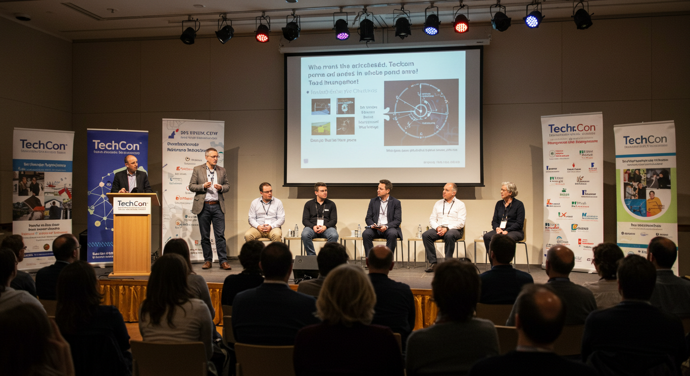

Since its launch in 2010, TechCon has grown from a small local gathering of tech enthusiasts to a global stage for innovation and collaboration. Over the years, we’ve welcomed thousands of developers, founders, students, and industry leaders who share a passion for building what’s next. From its humble beginnings in a university auditorium to sold-out convention centers, TechCon continues to break new ground every year.

TechCon 2010 - Our first event
Our Mission
At TechCon, our mission is to empower the next generation of innovators. We believe in the power of technology to transform lives and communities. Our conference serves as a platform for knowledge sharing, networking, and inspiration, bringing together diverse voices from around the world. We aim to foster an inclusive environment where everyone can learn, connect, and grow.
Empowering Innovators
Notable Past Speakers
Each year, TechCon hosts trailblazers whose work is shaping the future. Here are just a few of the remarkable minds who have shared their insights on our stage:
Elena Rodriguez
CEO of InnovateX, Elena has championed ethical AI development and diversity in tech leadership. Her keynote in 2022 inspired thousands to build more responsible technology
Elena Rodriguez at TechCon 2022
David Chen
Lead Engineer at OpenAI Labs, David spoke about the practical future of AI and how developers can build real-world solutions with emerging tools
David Chen at TechCon 2023
Sarah Patel
Renowned futurist and best-selling author, Sarah’s talk on the human side of technology challenged the audience to design for people first